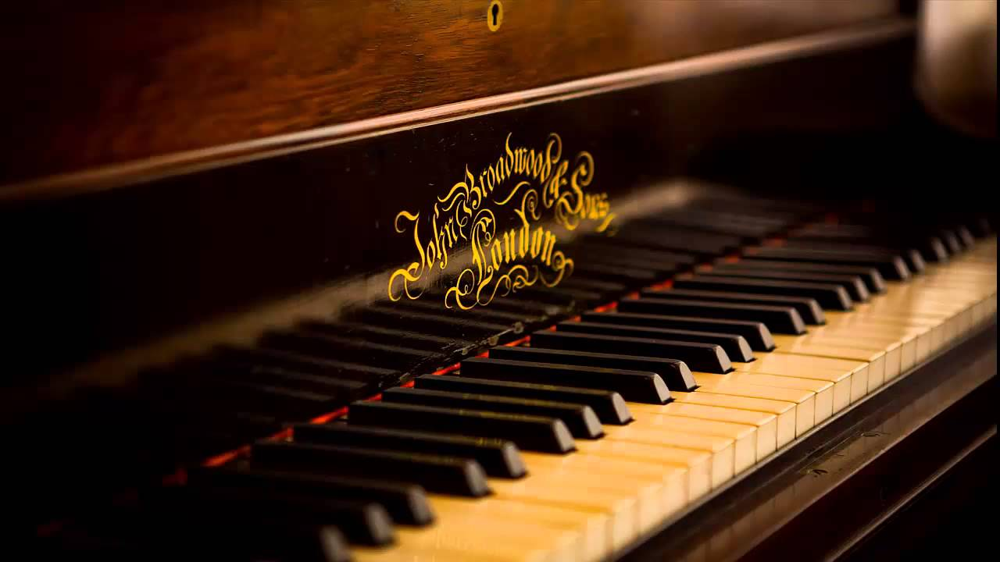
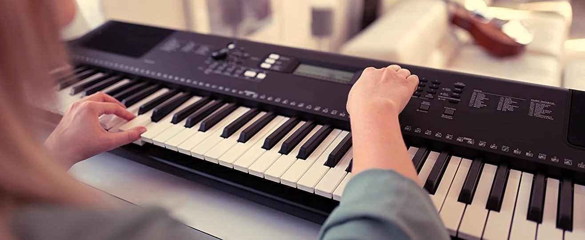
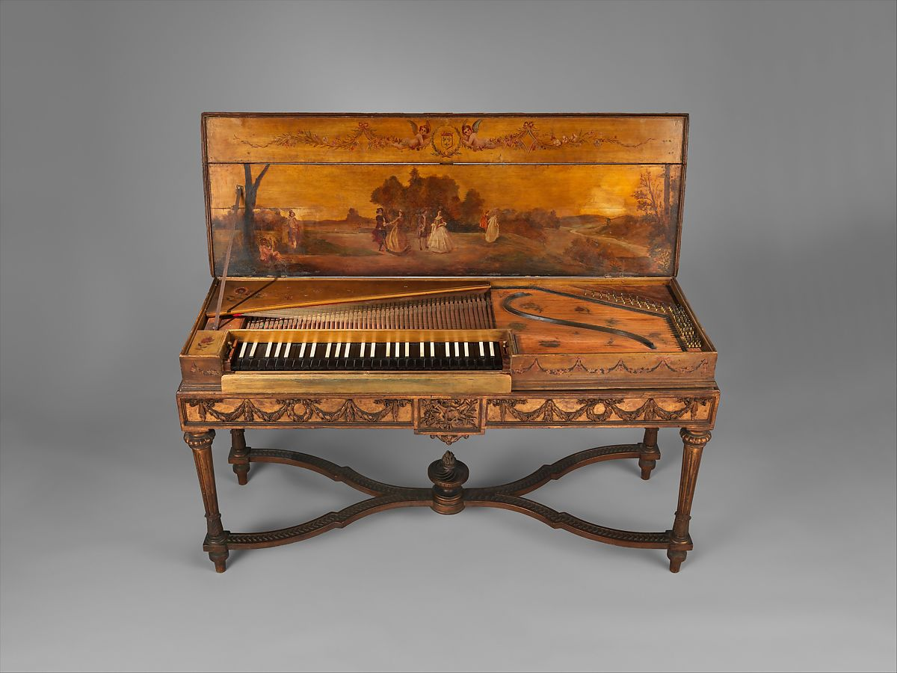

The piano is an acoustic, keyboard and stringed musical instrument invented in Italy by Bartolomeo Cristofori around the year 1700 (the exact year is uncertain), in which the strings are struck by wooden hammers that are coated with a ter material (modern hammers are covered with dense wool felt; some early pianos used leather). It is played using a keyboard, which is a row of keys (small levers) that the performer presses down or strikes with the fingers and thumbs of both hands to cause the hammers to strike the strings.
The piano was founded on earlier technological innovations in keyboard instruments. Pipe organs have been used since antiquity, and as such, the development of pipe organs enabled instrument builders to learn about creating keyboard mechanisms for sounding pitches. The first string instruments with struck strings were the hammered dulcimers,[6] which were used since the Middle Ages in Europe. During the Middle Ages, there were several attempts at creating stringed keyboard instruments with struck strings.[7] By the 17th century, the mechanisms of keyboard instruments such as the clavichord and the harpsichord were well developed. In a clavichord, the strings are struck by tangents, while in a harpsichord, they are mechanically plucked by quills when the performer depresses the key. Centuries of work on the mechanism of the harpsichord in particular had shown instrument builders the most effective ways to construct the case, soundboard, bridge, and mechanical action for a keyboard intended to sound strings.
The piano is a crucial instrument in Western classical music, jazz, blues, rock, folk music, and many other Western musical genres. Pianos are used in soloing or melodic roles and as accompaniment instruments. As well, pianos can be played alone, with a voice or other instrument, in small groups (bands and chamber music ensembles) and large ensembles (big band or orchestra). A large number of composers and songwriters are proficient pianists because the piano keyboard offers an effective means of experimenting with complex melodic and harmonic interplay of chords and trying out multiple, independent melody lines that are played at the same time. Pianos are used by composers doing film and television scoring, as the large range permits composers try out melodies and bass lines, even if the music will be orchestrated for other instruments.
Pianos are heavy and powerful, yet delicate instruments. Over the years, professional piano movers have developed special techniques for transporting both grands and uprights, which prevent damage to the case and to the piano's mechanical elements. Pianos need regular tuning to keep them on correct pitch. The hammers of pianos are voiced to compensate for gradual hardening of the felt, and other parts also need periodic regulation. Pianos need regular maintenance to ensure the felt hammers and key mechanisms are functioning properly. Aged and worn pianos can be rebuilt or reconditioned by piano rebuilders. Strings eventually must be replaced. Often, by replacing a great number of their parts, and adjusting them, old instruments can perform as well as new pianos.
The Italian musical terms piano and forte indicate "soft" and "loud" respectively , in this context referring to the variations in volume produced in response to a pianist's touch or pressure on the keys: the greater the velocity of a key press, the greater the force of the hammer hitting the strings, and the louder the sound of the note produced and the stronger the attack. The name was created as a contrast to harpsichord, a musical instrument that does not allow variation in volume; compared to the harpsichord, the first fortepianos in the 1700s had a quieter sound and smaller dynamic range.
What is the role of a piano? The piano is a powerful instrument that can easily handle each of the major components of a song – bass, rhythm, harmony, and melody – while also making the perfect accompaniment instrument.
Health – Playing the piano is good for your brain and the overall functionality of your body. ... Learning the piano also makes learning other instruments less difficult. Entertaining – Even if you're not a piano player yourself, you never know which one of your guests may be able to dazzle you with their skills. The piano is usually used to play two parts simultaneously. This is one of its most unique qualities. With the piano, most of its music is written to provide chords and melody all played by one musician. ... All of these points lead people to call the piano the most versatile and best instrument to learn first.
Why should I learn piano? Regular piano playing offers different physical and physiological advantages to players. It sharpens fine motor skills, improves dexterity and hand-eye coordination. Music has also been shown to reduce heart and respiratory rates, cardiac complications, and to lower blood pressure and increase immune response.
Thanks to mobile technology and synthesizers, the piano remains as ubiquitous as it was in the 18th century. Beyond that, its hammer and chord construction, which allows the piano to adjust the intensity of notes depending on how hard the instrument is played, has also contributed to the piano's popularity.
Pianos go higher and lower in frequency than any other instrument. ... The piano trains players on all four harmonic parts of music. Most instruments only allow playing of one note at a time. After learning to play the piano, all other instruments are much easier to learn to play.
The piano is a musical instrument played by means of a keyboard . Widely used in classical and jazz music for solo performances, ensemble use, chamber music and accompaniment, the piano is also popular as a tool for composing and rehearsal. Although not portable and often expensive, the piano's versatility and ubiquity have made it one of the world's most familiar musical instruments. Pressing a key on the piano's keyboard causes a padded hammer to strike steel strings. The hammers rebound, and the strings continue to vibrate at their resonant frequency. These vibrations are transmitted through a bridge to a sounding board that more efficiently couples the acoustic energy to the air. The sound would otherwise be no louder than that directly produced by the strings. When the key is released, a damper stops the string's vibration and the sound. See the article on Piano key frequencies for a picture of the piano keyboard and the location of middle-C. In the Hornbostel-Sachs system of instrument classification, pianos are considered chordophones. The word piano is a shortened form of pianoforte, the Italian word for the instrument.
https://hinves.com/blog/que-piano-se-recomienda-comprar-para-aprender-a-tocar-hinves-pianos/
Piano Website, and may not be duplicated, copied, modified or adapted,
in any way without our written permission. Our Website or Blog may contain our service
marks or trademarks as well as those of our affiliates or other companies, in the form of words, graphics, and logos.